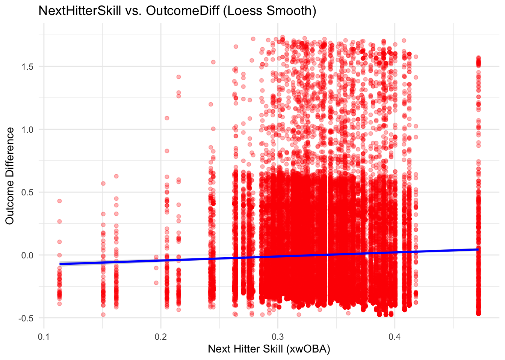
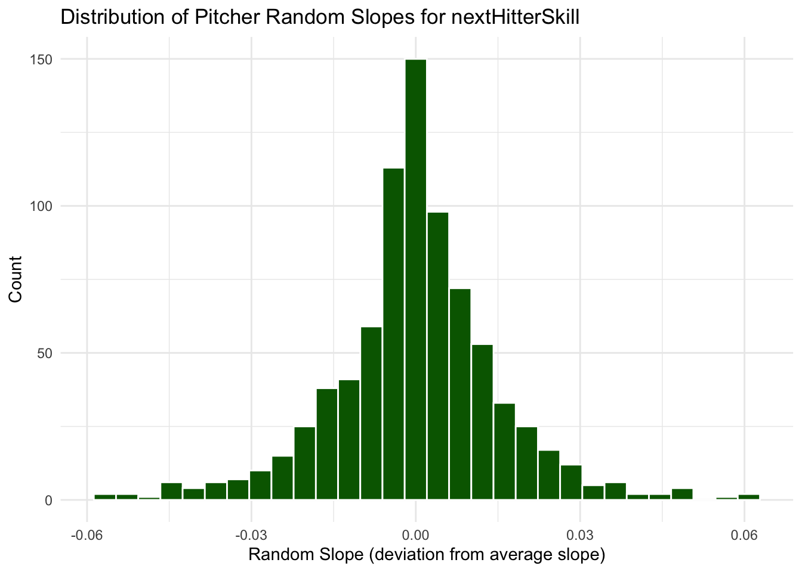

── Attaching core tidyverse packages ──────────────────────── tidyverse 2.0.0 ──
✔ dplyr 1.1.4 ✔ readr 2.1.5
✔ forcats 1.0.0 ✔ stringr 1.5.1
✔ ggplot2 3.5.1 ✔ tibble 3.2.1
✔ lubridate 1.9.3 ✔ tidyr 1.3.1
✔ purrr 1.0.2
── Conflicts ────────────────────────────────────────── tidyverse_conflicts() ──
✖ dplyr::filter() masks stats::filter()
✖ dplyr::lag() masks stats::lag()
ℹ Use the conflicted package (<http://conflicted.r-lib.org/>) to force all conflicts to become errors
Loading required package: Matrix
Attaching package: 'Matrix'
The following objects are masked from 'package:tidyr':
expand, pack, unpack
Attaching package: 'lmerTest'
The following object is masked from 'package:lme4':
lmer
The following object is masked from 'package:stats':
stepIntroduction to Lineup Protection
Batting order optimization is a heavily studied aspect of baseball decision-making, where teams construct lineups to maximize run production. Most studies in this area assume that hitters in the lineup are independent of one another. However, the concept of lineup protection—the idea that a hitter’s performance is influenced by the quality of the hitter after them—remains debated within the sabermetrics community. Although batting order decisions may offer only marginal advantages in expected runs, in an era where every competitive edge counts, even subtle effects like lineup protection deserve closer examination. The theory behind lineup protection is that a hitter with a good hitter behind them will be harder to pitch around because pitchers won’t want to face the guy after him either, particularly with more runners on base. Thus, walks would decrease, and that would mean more fastballs, strikes, and pitches over the plate, essentially increasing the probability for productive hitting.
There are two main ways to study lineup protection:
Pitcher-Centric Analysis: Examining how pitchers alter their approach based on the quality next hitter. Previous research using 30 hitter pairs since the advent of Statcast suggested that protected hitters see an average of 0.25% more strikes compared to league average, and 0.07% more pitches down the middle of the zone. This would lead to 6 additional strikes and 2 additional pitches down the middle over a season. This study was extremely limited, however, and did not account for situations without protection, only used 30 pairs of hitters, and only compared the strike percentage a protected hitter received to the league average of that year, not to the strike percentage they had in other non-protected plate appearances. If lineup protection were to exist, teams should avoid wasting lineup protection on free swingers (putting free swingers before “protectors”) so that the protection is not wasted on hitters who would swing at a higher rate anyway (The Paraball Notes, 2024). Quantitatively, the hitter who bats behind you SHOULD impact the pitches you see, because the run expectancy of certain plays occurring (like walks) would change based on who the following batter is (Weinberg, 2013). Evidence of certain pairs often seems to point to the opposite, with a 2012 evaluation of players hitting after Andrew McCutchen, Ryan Braun, and Joey Votto showing no evidence that pitchers were pitching them differently based on the protection they had (Cameron, 2012).
Hall of Famer Miguel Cabrera attributed part of his power struggles early in the 2019 season to a lack of lineup protection, essentially calling out productive-yet-not-spectacular hitter behind him, Niko Goodrum, saying, “In the past… I got a big bat behind me. You see the way guys pitch me? that explains everything.” His manager responded by saying his statement was “crazy.” Data revealed that he wasn’t getting particularly fewer fastballs, strikes, or good pitches to hit in general, and that in his particular case, there wasn’t evidence for lineup protection (Stavenhagen, 2019).
Hitter Outcome Analysis: Investigating whether the quality of the next hitter influences the current hitter’s performance. Pre-Pitch F/X research found that pitchers who know that a good hitter is up next will “pitch around” the current hitter, resulting in significantly more walks, and moderately more strikeouts. However, it found that when it comes to putting the ball in play, there was no significant impact (Tango, 2006). Much of the sabermetric community says that lineup protection is a myth, and that a player’s production is almost solely determined by their own skills; luck and random variation also play a small role (Ambrosino, 2011).
However, a study in 2011 found that power numbers did have significant differences in situations of potential lineup protection (Phillips, 2011).
Much of this hitter outcome analysis is rather anecdotal, focusing on specific players and how they fare with protection. Using over 3000 Plate Appearances from Pete Alonso’s career using data from before his 2024 season, we can see higher slugging percentages with better hitters behind him, along with being 11% more likely to homer. With worse protection, he is more likely to walk, although his strikeout rates go against previous research and actually decrease with poor hitters behind him (Britton, 2024). Other research takes specific teams and analyzes whether the topic of lineup protection even applies and whether it serves a purpose in that roster’s decision-making. When the Diamondbacks acquired Mark Trumbo in 2014, writers brought up the fact that even though Trumbo’s power threat could serve to protect Paul Goldschmidt, Trumbo may not even be much better than other Diamondbacks hitters who could replace him in terms of offensive threat in general (Wiser, 2014). In 2015, Billy Hamilton pointed to a different sort of offensive advantage owing to the hitter behind him–knowing Joey Votto was hitting after him, an incredibly selective hitter often with long counts, allowed Hamilton to be patient and wait for the right pitch to steal on. In this situation, with a small sample size, the threat of Votto was preventing opposing pitchers from throwing fastballs with Hamilton on base, allowing Hamilton to get better base-stealing opportunities (Petriello, 2015).
It is worth noting that many within baseball discuss lineup protection with certainty. Alonso had pushed for J.D. Martinez to join and hit behind him for the Mets in 2024. Interviews with several within the game in 2015 resulted in a plethora of answers, from Joe Girardi saying lineup protection was most significant in lefty-righty matchups, Madison Bumgarner saying he doesn’t pay attention to the on-deck circle, Tim Hudson saying that it’s “foolish if you don’t look at the next hitter,” and multiple other pitchers saying it is a factor in their decision-making, especially later in the game.
Aim
This article aims to provide further insights into lineup protection using pitch-by-pitch data Statcast data from the 2024 Major League Baseball season, focusing on analyzing hitter outcomes. While literature is mixed and often negative on the existence of lineup protection, it often uses anecdotal evidence, and a more thorough investigation is necessary, especially one using the more advanced expected statistics we now have available.
Setup
We would like our independent variables to be the following.
Current batter and pitcher random effects
Current hitter’s handedness and underlying quality (xwOBA)
Next hitter’s handedness and underlying quality (xwOBA)
Base-out state
Inning
Run differential
Previous studies have looked at protection as a binary independent variable, but that is a narrow view on lineup protection. Lineup protection must be considered as a continuous variable because some players will protect more than others.
Our outcome variable will be that plate appearance’s xwOBA, which will essentially give us the quality of that plate appearance based on the independent variables We would then like to see what factor the quality of the next batter has in the outcome.
Methods
First, we loaded in our libraries and read the data, which contains almost every pitch from the 2024 season (excluding when poor data was retrieved).
Show Code
statcast_url = "https://lances-lineups-data.s3.us-east-2.amazonaws.com/statcast_data.csv"
statcast_data <- read_csv(statcast_url)Rows: 701557 Columns: 113
── Column specification ────────────────────────────────────────────────────────
Delimiter: ","
chr (16): pitch_type, player_name, events, description, des, game_type, sta...
dbl (88): release_speed, release_pos_x, release_pos_z, batter, pitcher, zon...
lgl (8): spin_dir, spin_rate_deprecated, break_angle_deprecated, break_len...
date (1): game_date
ℹ Use `spec()` to retrieve the full column specification for this data.
ℹ Specify the column types or set `show_col_types = FALSE` to quiet this message.For each plate appearance, we aggregate key variables. We calculate pa_xwOBA as the average estimated_woba_using_speedangle for that plate appearance. We also compute run differential as the difference between bat_score and fld_score using the first pitch in the plate appearance, which reflects the score before the plate appearance starts.
Show Code
pa_data <- statcast_data %>%
group_by(game_pk, at_bat_number) %>%
summarize(
batter = first(batter),
pitcher = first(pitcher),
inning = first(inning),
batter_handedness = first(stand),
inning_topbot = first(inning_topbot),
# Calculate PA xwOBA from pitch-by-pitch data:
pa_xwOBA = mean(estimated_woba_using_speedangle, na.rm = TRUE),
outs_when_up = first(outs_when_up),
# Compute run differential at the time the PA begins:
run_diff = first(bat_score) - first(fld_score),
# Capture final base occupancy for this PA:
on_1b = last(on_1b),
on_2b = last(on_2b),
on_3b = last(on_3b),
.groups = "drop"
) %>%
arrange(game_pk, inning, inning_topbot, at_bat_number)We then find the next batter in the lineup and get their handedness.
Show Code
pa_data <- pa_data %>%
arrange(game_pk, inning_topbot, at_bat_number) %>%
mutate(
potential_next_batter = lead(batter),
potential_next_batter_handedness = lead(batter_handedness)
) %>%
ungroup()Let’s also create a single baserunner state variable.
Show Code
pa_data <- pa_data %>%
mutate(
baserunner_state = case_when(
!is.na(on_1b) & is.na(on_2b) & is.na(on_3b) ~ "1B",
is.na(on_1b) & !is.na(on_2b) & is.na(on_3b) ~ "2B",
is.na(on_1b) & is.na(on_2b) & !is.na(on_3b) ~ "3B",
!is.na(on_1b) & !is.na(on_2b) & is.na(on_3b) ~ "1B-2B",
!is.na(on_1b) & is.na(on_2b) & !is.na(on_3b) ~ "1B-3B",
is.na(on_1b) & !is.na(on_2b) & !is.na(on_3b) ~ "2B-3B",
!is.na(on_1b) & !is.na(on_2b) & !is.na(on_3b) ~ "Loaded",
TRUE ~ "Empty"
)
)Show Code
# SPECIAL CASE: Remove next batter for bottom 9th+ with 2 outs and bases loaded
pa_data <- pa_data %>%
mutate(
bases_loaded = ifelse(!is.na(on_1b) & !is.na(on_2b) & !is.na(on_3b), 1, 0),
potential_next_batter = ifelse(inning_topbot == "Bot" & inning >= 9 & outs_when_up == 2 & bases_loaded == 1, NA, potential_next_batter)
) %>%
select(-bases_loaded)We will then want to make sure all hitters considered (and next hitters) are qualified, so that their xwOBA over the season has stabilized somewhat. This is a threshold of 502 plate appearances.
Show Code
# Count the number of plate appearances per batter (as the current batter)
batter_counts <- pa_data %>%
group_by(batter) %>%
summarize(pa_count = n(), .groups = "drop")
# Count the appearances for batters when they appear as the potential next batter (on-deck)
potential_next_batter_counts <- pa_data %>%
group_by(potential_next_batter) %>%
summarize(next_pa_count = n(), .groups = "drop")
# Define the qualification threshold (502 PAs)
qualified_threshold <- 502
# Identify batters who have at least 502 PAs as the current batter
qualified_batters <- batter_counts %>%
filter(pa_count >= qualified_threshold) %>%
pull(batter)
# Identify batters who have at least 502 PAs as the potential next batter (on-deck)
qualified_next_batters <- potential_next_batter_counts %>%
filter(next_pa_count >= qualified_threshold) %>%
pull(potential_next_batter)
# Filter pa_data to retain only those rows where both the current batter
# and the potential next batter (on-deck hitter) are qualified.
pa_data_qualified <- pa_data %>%
filter(
batter %in% qualified_batters,
!is.na(potential_next_batter), # Ensure there is a potential next batter
potential_next_batter %in% qualified_next_batters
)We then calculate the current batter’s season-long xwOBA and the outcome difference between each plate appearance and that baseline xwOBA.
Show Code
# (a) For each current batter, calculate their season-long baseline PA xwOBA.
current_baseline <- pa_data_qualified %>%
group_by(batter) %>%
summarize(baseline_current = mean(pa_xwOBA, na.rm = TRUE), .groups = "drop")
# (b) Merge the baseline back into our data and compute outcomeDiff:
# outcomeDiff = PA xwOBA - current batter's baseline xwOBA.
pa_data_qualified <- pa_data_qualified %>%
left_join(current_baseline, by = "batter") %>%
mutate(outcomeDiff = pa_xwOBA - baseline_current)We then calculate the next batter’s season-long xwOBA.
Show Code
# Next batter's baseline xwOBA
next_baseline <- pa_data_qualified %>%
group_by(potential_next_batter) %>%
summarize(baseline_next = mean(pa_xwOBA, na.rm = TRUE), .groups = "drop")
# Merge next batter's baseline
pa_data_qualified <- pa_data_qualified %>%
left_join(next_baseline, by = c("potential_next_batter" = "potential_next_batter"))
# nextHitterSkill
pa_data_qualified <- pa_data_qualified %>%
mutate(
nextHitterSkill = baseline_next
)Now, let’s create our mixed-effects linear model and graph!
Show Code
pa_data_qualified$batter_handedness <- factor(pa_data_qualified$batter_handedness)
pa_data_qualified$potential_next_batter_handedness <- factor(pa_data_qualified$potential_next_batter_handedness)
# Fit model!
m_protection <- lmer(
outcomeDiff ~ nextHitterSkill + batter_handedness + potential_next_batter_handedness +
baserunner_state + outs_when_up + inning + run_diff +
(1 | batter) + (1 | pitcher),
data = pa_data_qualified
)boundary (singular) fit: see help('isSingular')Show Code
summary(m_protection)Linear mixed model fit by REML. t-tests use Satterthwaite's method [
lmerModLmerTest]
Formula:
outcomeDiff ~ nextHitterSkill + batter_handedness + potential_next_batter_handedness +
baserunner_state + outs_when_up + inning + run_diff + (1 |
batter) + (1 | pitcher)
Data: pa_data_qualified
REML criterion at convergence: 38790.5
Scaled residuals:
Min 1Q Median 3Q Max
-1.3626 -0.7670 -0.3533 0.6864 4.4658
Random effects:
Groups Name Variance Std.Dev.
pitcher (Intercept) 2.196e-04 1.482e-02
batter (Intercept) 2.438e-34 1.561e-17
Residual 1.512e-01 3.889e-01
Number of obs: 40706, groups: pitcher, 811; batter, 130
Fixed effects:
Estimate Std. Error df t value
(Intercept) -1.022e-01 1.775e-02 2.913e+04 -5.758
nextHitterSkill 3.246e-01 4.695e-02 3.965e+04 6.913
batter_handednessR 1.244e-03 4.081e-03 3.213e+04 0.305
potential_next_batter_handednessR -3.313e-03 4.076e-03 3.335e+04 -0.813
baserunner_state1B-2B 8.182e-03 8.715e-03 4.069e+04 0.939
baserunner_state1B-3B 1.818e-02 1.189e-02 4.069e+04 1.530
baserunner_state2B 7.758e-03 8.738e-03 4.069e+04 0.888
baserunner_state2B-3B 1.503e-02 1.669e-02 4.069e+04 0.900
baserunner_state3B -1.206e-02 1.362e-02 4.069e+04 -0.885
baserunner_stateEmpty -8.238e-03 5.019e-03 4.067e+04 -1.642
baserunner_stateLoaded 1.275e-04 1.367e-02 4.066e+04 0.009
outs_when_up -1.769e-03 2.434e-03 4.069e+04 -0.727
inning -1.318e-04 7.476e-04 2.084e+03 -0.176
run_diff 1.194e-03 6.716e-04 2.667e+04 1.777
Pr(>|t|)
(Intercept) 8.59e-09 ***
nextHitterSkill 4.80e-12 ***
batter_handednessR 0.7605
potential_next_batter_handednessR 0.4163
baserunner_state1B-2B 0.3478
baserunner_state1B-3B 0.1261
baserunner_state2B 0.3746
baserunner_state2B-3B 0.3680
baserunner_state3B 0.3762
baserunner_stateEmpty 0.1007
baserunner_stateLoaded 0.9926
outs_when_up 0.4673
inning 0.8601
run_diff 0.0756 .
---
Signif. codes: 0 '***' 0.001 '**' 0.01 '*' 0.05 '.' 0.1 ' ' 1
Correlation matrix not shown by default, as p = 14 > 12.
Use print(x, correlation=TRUE) or
vcov(x) if you need itoptimizer (nloptwrap) convergence code: 0 (OK)
boundary (singular) fit: see help('isSingular')Based on our mixed-effects model, we find that when we account for all of the aspects of the game situation, the next batter’s skill level has a statistically significant effect on the outcomeDiff, meaning better on-deck hitters (above league average) correlate with higher performance (relative to the batter’s own baseline). We find that a 1-unit increase in xwOBA is associated with a 0.3246 increase in the current PA’s outcomeDiff.
Our random variation at the pitcher level (~0.015) shows us that some pitchers systematically allow slightly higher or lower outcomeDiff.
Visualizations
Show Code
ggplot(pa_data_qualified, aes(x = nextHitterSkill, y = outcomeDiff)) +
geom_point(color = "red", alpha = 0.3) +
geom_smooth(method = "lm", se = TRUE, color = "blue") +
labs(
title = "NextHitterSkill vs. OutcomeDiff (Loess Smooth)",
x = "Next Hitter Skill (xwOBA)",
y = "Outcome Difference"
) +
theme_minimal()`geom_smooth()` using formula = 'y ~ x'Warning: Removed 391 rows containing non-finite outside the scale range
(`stat_smooth()`).Warning: Removed 391 rows containing missing values or values outside the scale range
(`geom_point()`).
Let’s also make a visualization showing how different pitchers are in terms of their adjustments to next batters. Pitcher’s random effects vary as expected: some pitchers tend to be associated with larger absolute changes in outcomeDiff than others. However, this is not statistically significant using an ANOVA test.
Show Code
m_protection_slope <- lmer(
outcomeDiff ~ nextHitterSkill + batter_handedness + potential_next_batter_handedness +
baserunner_state + outs_when_up + inning + run_diff +
# (1 + nextHitterSkill | pitcher) adds a random slope for nextHitterSkill
(1 + nextHitterSkill | pitcher) +
(1 | batter),
data = pa_data_qualified
)boundary (singular) fit: see help('isSingular')Warning: Model failed to converge with 1 negative eigenvalue: -6.0e+01Show Code
summary(m_protection_slope)Linear mixed model fit by REML. t-tests use Satterthwaite's method [
lmerModLmerTest]
Formula:
outcomeDiff ~ nextHitterSkill + batter_handedness + potential_next_batter_handedness +
baserunner_state + outs_when_up + inning + run_diff + (1 +
nextHitterSkill | pitcher) + (1 | batter)
Data: pa_data_qualified
REML criterion at convergence: 38787.6
Scaled residuals:
Min 1Q Median 3Q Max
-1.3741 -0.7665 -0.3539 0.6859 4.4675
Random effects:
Groups Name Variance Std.Dev. Corr
pitcher (Intercept) 0.000000 0.00000
nextHitterSkill 0.002719 0.05215 NaN
batter (Intercept) 0.000000 0.00000
Residual 0.151146 0.38878
Number of obs: 40706, groups: pitcher, 811; batter, 130
Fixed effects:
Estimate Std. Error df t value
(Intercept) -1.035e-01 1.774e-02 3.493e+04 -5.833
nextHitterSkill 3.281e-01 4.702e-02 3.032e+04 6.977
batter_handednessR 1.342e-03 4.085e-03 3.336e+04 0.329
potential_next_batter_handednessR -3.183e-03 4.079e-03 3.461e+04 -0.780
baserunner_state1B-2B 8.122e-03 8.715e-03 4.069e+04 0.932
baserunner_state1B-3B 1.815e-02 1.189e-02 4.069e+04 1.527
baserunner_state2B 7.837e-03 8.738e-03 4.069e+04 0.897
baserunner_state2B-3B 1.498e-02 1.669e-02 4.068e+04 0.897
baserunner_state3B -1.197e-02 1.362e-02 4.069e+04 -0.879
baserunner_stateEmpty -8.097e-03 5.019e-03 4.068e+04 -1.613
baserunner_stateLoaded 1.396e-04 1.367e-02 4.067e+04 0.010
outs_when_up -1.747e-03 2.434e-03 4.069e+04 -0.718
inning -1.170e-04 7.543e-04 2.175e+03 -0.155
run_diff 1.140e-03 6.727e-04 2.697e+04 1.695
Pr(>|t|)
(Intercept) 5.51e-09 ***
nextHitterSkill 3.07e-12 ***
batter_handednessR 0.7425
potential_next_batter_handednessR 0.4352
baserunner_state1B-2B 0.3513
baserunner_state1B-3B 0.1268
baserunner_state2B 0.3698
baserunner_state2B-3B 0.3696
baserunner_state3B 0.3796
baserunner_stateEmpty 0.1067
baserunner_stateLoaded 0.9918
outs_when_up 0.4731
inning 0.8767
run_diff 0.0901 .
---
Signif. codes: 0 '***' 0.001 '**' 0.01 '*' 0.05 '.' 0.1 ' ' 1
Correlation matrix not shown by default, as p = 14 > 12.
Use print(x, correlation=TRUE) or
vcov(x) if you need itoptimizer (nloptwrap) convergence code: 0 (OK)
boundary (singular) fit: see help('isSingular')Show Code
anova(m_protection, m_protection_slope, refit = FALSE)Data: pa_data_qualified
Models:
m_protection: outcomeDiff ~ nextHitterSkill + batter_handedness + potential_next_batter_handedness + baserunner_state + outs_when_up + inning + run_diff + (1 | batter) + (1 | pitcher)
m_protection_slope: outcomeDiff ~ nextHitterSkill + batter_handedness + potential_next_batter_handedness + baserunner_state + outs_when_up + inning + run_diff + (1 + nextHitterSkill | pitcher) + (1 | batter)
npar AIC BIC logLik deviance Chisq Df Pr(>Chisq)
m_protection 17 38824 38971 -19395 38790
m_protection_slope 19 38826 38989 -19394 38788 2.9007 2 0.2345Show Code
ranefs <- ranef(m_protection_slope)
# This is a list with $pitcher and $batter (since you have random effects for both).
pitcher_re <- ranefs$pitcher
# Convert to a data frame
pitcher_re_df <- as.data.frame(pitcher_re)
# The data frame might have columns (Intercept) and nextHitterSkill
# We'll rename them for clarity:
names(pitcher_re_df) <- c("random_intercept", "random_slope_for_skill")
# Add pitcher ID as a column
pitcher_re_df$pitcher_id <- rownames(pitcher_re)Show Code
ggplot(pitcher_re_df, aes(x = random_slope_for_skill)) +
geom_histogram(bins = 30, fill = "darkgreen", color = "white") +
labs(
title = "Distribution of Pitcher Random Slopes for nextHitterSkill",
x = "Random Slope (deviation from average slope)",
y = "Count"
) +
theme_minimal()
Let’s list out the top and bottom 5 pitchers in terms of their random effects.
Show Code
library(dplyr)
# 1. Extract the random effects for pitchers
pitcher_random_effects <- ranef(m_protection)$pitcher
# 2. Convert it to a data frame and rename the random intercept column
pitcher_re_df <- pitcher_random_effects %>%
as.data.frame() %>%
rename(random_intercept = `(Intercept)`) %>%
mutate(pitcher_id = row.names(pitcher_random_effects))
# 3. Sort by descending random_intercept to identify top/bottom pitchers
pitcher_re_sorted <- pitcher_re_df %>%
arrange(desc(random_intercept))
# 4. Grab the top 5 and bottom 5
top_5_pitchers <- head(pitcher_re_sorted, 5)
bottom_5_pitchers <- tail(pitcher_re_sorted, 5)
# 5. Print or inspect results
cat("Top 5 Pitchers by Random Effect:\n")Top 5 Pitchers by Random Effect:Show Code
print(top_5_pitchers) random_intercept pitcher_id
592836 0.01481674 592836
676272 0.01481480 676272
621389 0.01345895 621389
665871 0.01232840 665871
656605 0.01220370 656605Show Code
cat("\nBottom 5 Pitchers by Random Effect:\n")
Bottom 5 Pitchers by Random Effect:Show Code
print(bottom_5_pitchers) random_intercept pitcher_id
605400 -0.01188057 605400
680885 -0.01294543 680885
694973 -0.01312743 694973
669373 -0.01397799 669373
595014 -0.01425556 595014Discussion
This study, although rather simple, tackles some of the problems with sabermetrics’ view of lineup protection. By accounting for different game situations, we find that the skill of the next batter does have a statistically significant impact on the xwOBA of the current one. This will have significant implications for lineup construction, given that we have found a way to make players better simply by making the players hitting behind them better.
Why is it important –> Player evaluation and player valuation, iumplications for fantasy sports, projections.
References
Ambrosino, D. (2011, November 30). Orders of protection. The Hardball Times. https://tht.fangraphs.com/orders-of-protection/
Bradbury, J. C., & Drinen, D. J. (2007). Pigou at the plate. Journal of Sports Economics, 9(2), 211-224. https://doi.org/10.1177/1527002507300178
Britton, T. (2024, April 26). J.D. Martinez will be Pete Alonso’s protection in Mets lineup. Does that matter? The New York Times. https://www.nytimes.com/athletic/5443604/2024/04/26/mets-pete-alonso-jd-martinez-lineup/
Cameron, D. (2012, May 25). Cameron: McCutchen disproves lineup protection. ESPN.com. https://insider.espn.com/mlb/insider/story/_/id/7970598/andrew-mccutchen-another-example-why-lineup-protection-myth-mlb
How to quantify lineup protection in baseball — The Paraball notes. (2024, April 9). The Paraball Notes. https://www.paraballnotes.com/blog/how-to-quantify-lineup-protection-in-baseball
Laurila, D. (2016, July 14). Player’s view: Does lineup protection exist? FanGraphs Baseball. https://blogs.fangraphs.com/players-view-does-lineup-protection-exist/
Petriello, M. (2015, April 13). Billy Hamilton’s reverse lineup protection. FanGraphs Baseball. https://blogs.fangraphs.com/billy-hamiltons-reverse-lineup-protection/
Phillips, D. C. (2011). You’re hurting my game: Lineup protection and injuries in Major League Baseball. Journal of Quantitative Analysis in Sports, 7(3). https://doi.org/10.2202/1559-0410.1296
Stavenhagen, C. (2019, May 7). The (latest) numbers behind Miguel Cabrera’s remarks on lineup protection. The New York Times. https://www.nytimes.com/athletic/965467/2019/05/07/the-latest-numbers-behind-miguel-cabreras-remarks-on-lineup-protection/
Tango, T. (2006, April 7). Pitching around batters. The Hardball Times. https://tht.fangraphs.com/pitching-around-batters/
Weinberg, N. (2013, January 1). Lineup protection: Fact or fiction? New English D. https://newenglishd.com/2013/01/01/lineup-protection-fact-or-fiction/
Wiser, J. (2014, February 19). Let’s talk about lineup protection. Inside the ’Zona. https://insidethezona.com/2014/02/lets-talk-lineup-protection/